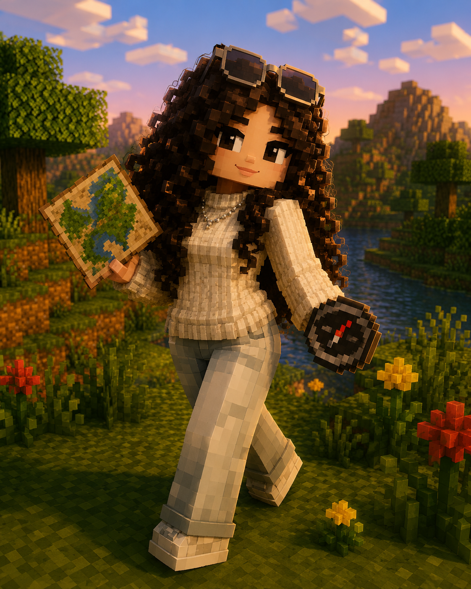
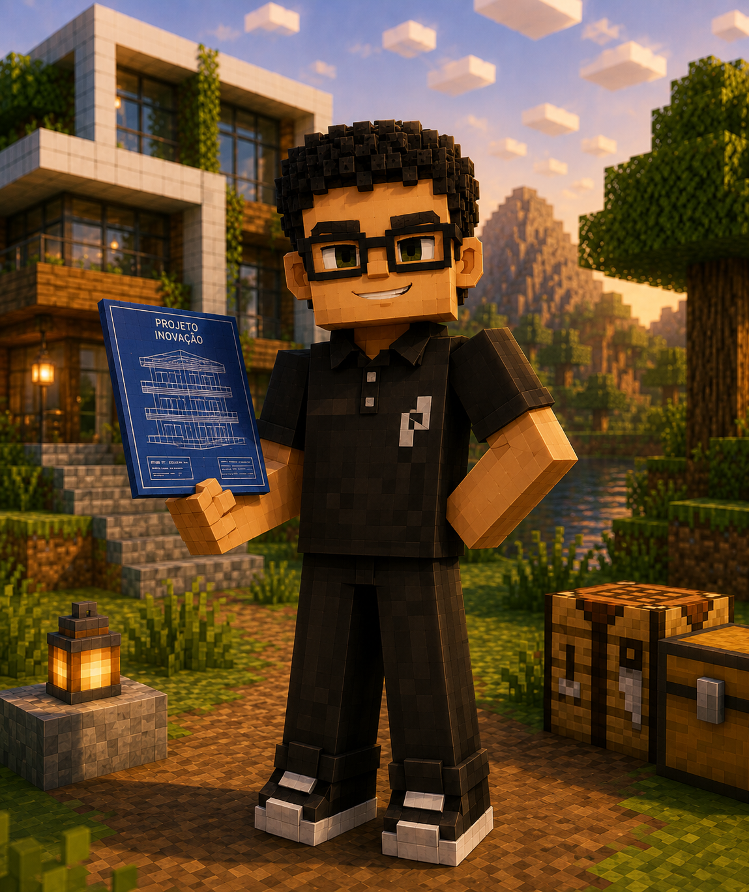
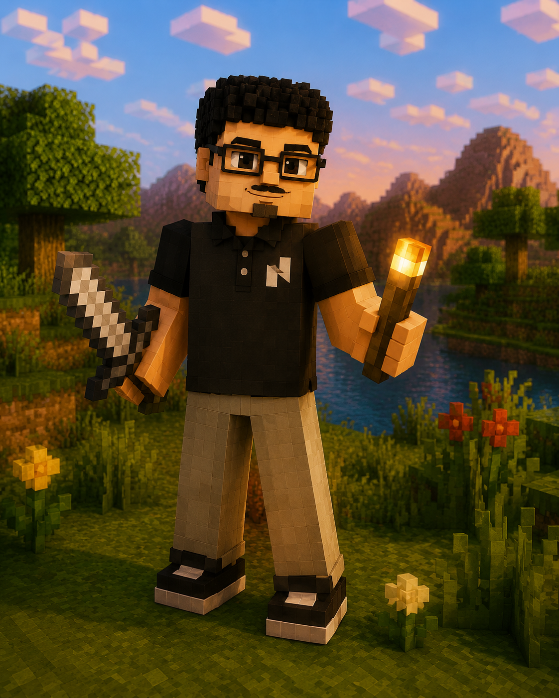
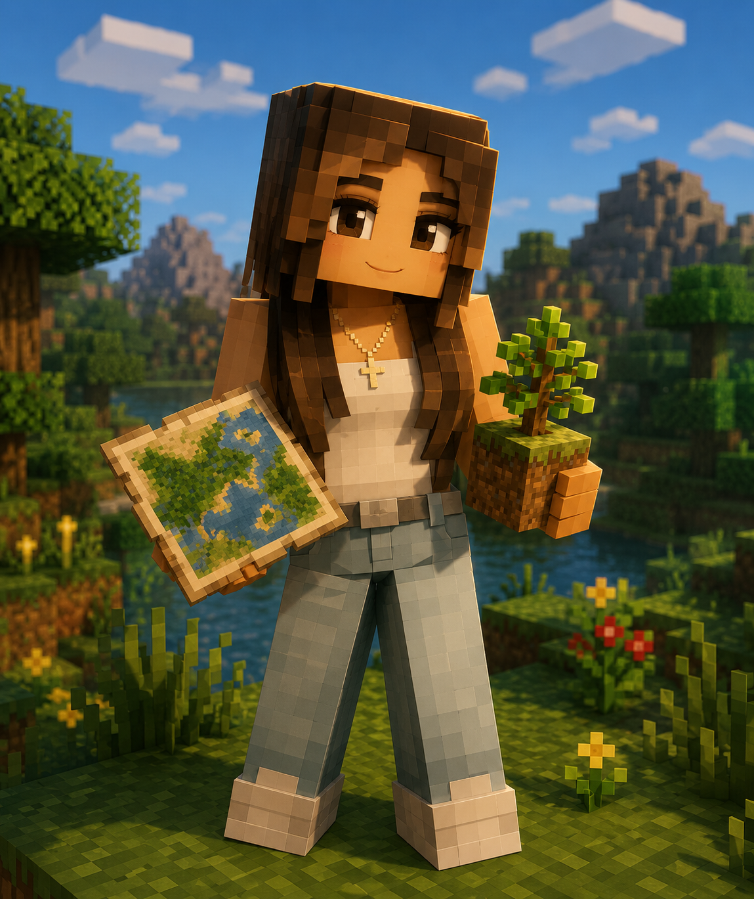
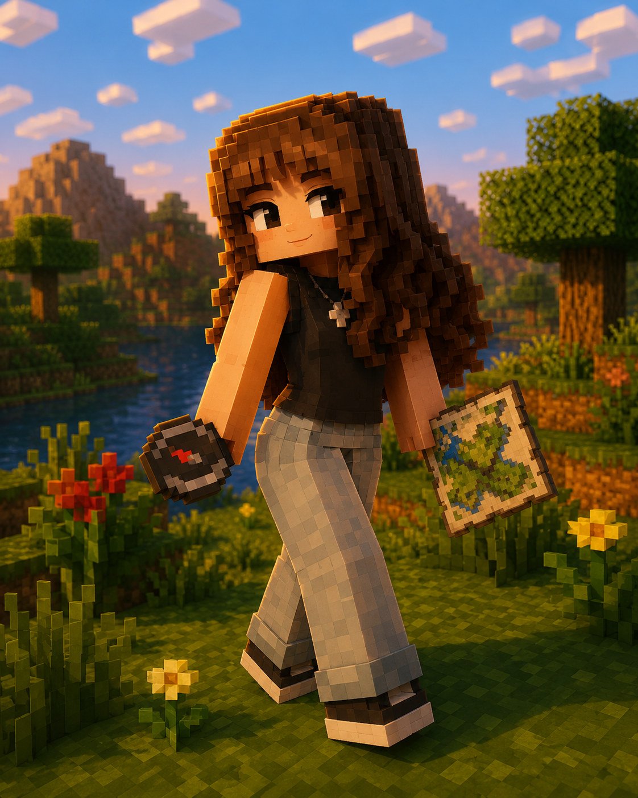

O que é Minecraft
Descubra como surgiu o jogo, seus principais objetivos e por que ele se tornou um dos maiores sucessos da história.
O Minecraft é um dos jogos mais populares do mundo e permite que milhões de jogadores explorem, construam e sobrevivam em um universo formado por blocos. Além da diversão, o jogo estimula criatividade, planejamento, resolução de problemas e trabalho em equipe.
Este site foi desenvolvido como parte de um trabalho da disciplina de Sistemas Operacionais, com o objetivo de praticar desenvolvimento web utilizando HTML, CSS, Git e GitHub, além de aplicar conceitos de colaboração em equipe por meio de controle de versão.
Durante o projeto, cada integrante foi responsável por uma parte do conteúdo, trabalhando em sua própria branch e integrando as alterações através de Pull Requests, simulando o fluxo utilizado em equipes de desenvolvimento profissionais.
Nosso site está dividido em cinco áreas principais, cada uma desenvolvida por um integrante da equipe para apresentar diferentes aspectos do universo Minecraft.
Descubra como surgiu o jogo, seus principais objetivos e por que ele se tornou um dos maiores sucessos da história.
Conheça as diferenças entre Survival, Creative, Adventure, Hardcore e Spectator.
Explore os diferentes ambientes do jogo, suas características, vegetação, clima e criaturas.
Viaje pelo Overworld, Nether e End entendendo a função de cada uma.
Descubra as criaturas passivas, neutras e hostis presentes no universo Minecraft.
Este projeto foi desenvolvido em equipe utilizando Git e GitHub para organizar o trabalho colaborativo.
Cada integrante foi responsável por uma etapa específica do desenvolvimento, contribuindo para que o site fosse construído de maneira organizada e seguindo boas práticas de versionamento.

Arquiteta

Integrador

Versionador

Documentadora

Revisora Chefe